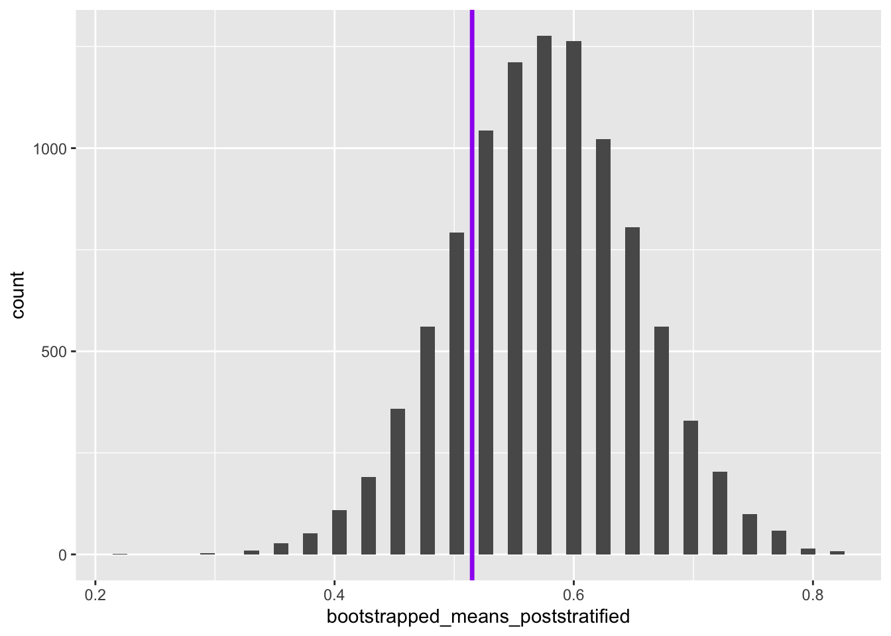

In the introductionary post in this series on Hacker Stats, I mentioned that resampling methods can be used to perform post-stratification, meaning reweighting of observations from a sample in such a way as to make them more representative of the population of interest to us. Let’s look at this using a couple of examples: the red coin/blue coin example from a couple of posts ago; and the GSS dataset used in the inferpackage introduction.
Red Coin/Blue Coin
Imagine we have a population of two types of coin:
Red Coins, which come up heads 65% of the time
Blue Coins, which come up heads 47% of the time
Within our population, we know 75% of the coins are Blue coins, and 25 of the coins are Red Coins.
However, our sample contains 20 red coins, and 20 blue coins. i.e. the distribution of coin types in our sample is different to that in our population.
Let’s first create this sample dataset:
Code
library(tidyverse)
Warning: package 'tidyverse' was built under R version 4.1.3
coin_colour outcome
1 red 1
2 red 1
3 red 1
4 red 1
5 red 1
6 red 1
7 red 1
8 red 1
9 red 0
10 red 0
11 red 1
12 red 1
13 red 0
14 red 1
15 red 1
16 red 1
17 red 1
18 red 0
19 red 1
20 red 1
21 blue 1
22 blue 0
23 blue 0
24 blue 0
25 blue 0
26 blue 1
27 blue 0
28 blue 0
29 blue 1
30 blue 1
31 blue 0
32 blue 1
33 blue 0
34 blue 1
35 blue 0
36 blue 1
37 blue 1
38 blue 1
39 blue 0
40 blue 1
What’s the expected probability of heads in the sample?
# A tibble: 2 × 2
coin_colour prop
<chr> <dbl>
1 blue 0.5
2 red 0.8
Overall, 65% of the sample - 20 reds, 20 blues - are heads. The proportion of blues is 50%, and of reds is 80%. So, it so happens that, with this random number seed, the proportions in the sample of both reds and blues are higher than the theoretical average (the prob value arguments in the code above).
Let’s now try to use bootstrapping to calculate a distribution around the sample mean:
Code
bootstrap_means <-function(x, nReps =10000){ out <-vector("numeric", nReps) for (i in1:nReps){ this_resample <-sample(x=x, size =length(x), replace =TRUE# This is what makes it bootstrapping ) out[i] <-mean(this_resample) } out}bootstrapped_means <-bootstrap_means(real_sample_data$outcome)head(bootstrapped_means)
So it’s clear the distributions for mean values of the two different coin types are different, even though there’s some overlap.
Let’s now look at doing some post-stratification, where we sample from the two groups in proportion to the relative probabilities of encountering observations from the two groups in the population as compared with the sample. Let’s think through what this means:
Proportions by group in sample and population
Group
Sample
Population
Ratio
Blue
0.5
0.75
\(3/2\)
Red
0.5
0.25
\(1/2\)
Column Sum
1.00
1.00
In this table, the ratio is the row-wise ratio of the population value divided by the sample value. Note that the ratios have a common denominator, 2, which we can drop in defining the probability weights, leaving us with 3 for blue and 1 for red.
We can adapt the standard bootstrapping approach by using the prob argument in the sample() function, using these weights:
coin_colour outcome wt
1 red 1 1
2 red 1 1
3 red 1 1
4 red 1 1
5 red 1 1
6 red 1 1
7 red 1 1
8 red 1 1
9 red 0 1
10 red 0 1
11 red 1 1
12 red 1 1
13 red 0 1
14 red 1 1
15 red 1 1
16 red 1 1
17 red 1 1
18 red 0 1
19 red 1 1
20 red 1 1
21 blue 1 3
22 blue 0 3
23 blue 0 3
24 blue 0 3
25 blue 0 3
26 blue 1 3
27 blue 0 3
28 blue 0 3
29 blue 1 3
30 blue 1 3
31 blue 0 3
32 blue 1 3
33 blue 0 3
34 blue 1 3
35 blue 0 3
36 blue 1 3
37 blue 1 3
38 blue 1 3
39 blue 0 3
40 blue 1 3
And now a slightly modified version of the bootstrapping function:
Code
bootstrap_means_wt <-function(x, wt, nReps =10000){ #wt is the weighting out <-vector("numeric", nReps) for (i in1:nReps){ this_resample <-sample(x=x, size =length(x), prob = wt, # This is the new argumentreplace =TRUE# This is what makes it bootstrapping ) out[i] <-mean(this_resample) } out}
Now, analytically, we can calculate what the mean of the population should be given the proportion of blues and reds, and the proportion of blues that are heads, and proportion of reds that are heads:
Warning: Using `size` aesthetic for lines was deprecated in ggplot2 3.4.0.
ℹ Please use `linewidth` instead.

So we can see that the true population mean falls within the reweighted bootstrapped distribution of the values of the mean estimated. How about if we had not performed reweighting on the sample?
So, although on this occasion, the true population value is also within the range of the un-reweighted bootstrapped distribution, it is further from the centre of this distribution’s mass.
Let’s give some numbers to the above. What proportion of the bootstrapped values are below the true population value?
Now 22.4% of values of the means from the reweighted/post-stratified bootstrapped distribution are below the true value. This is the difference between the true value being in the 90% central interval or not.
Summary
In this post we’ve illustrated the importance of post-stratifying data were we know a sample is biased in terms of the relative weight given to the strata it contains as compared with the population. We’ve also shown, using Base R functions alone, how to perform this post-stratification using just two additional changes: a vector of weights, which was fairly straightforward to calculate; and the passing of this vector of weights to the prob argument in the sample() function.